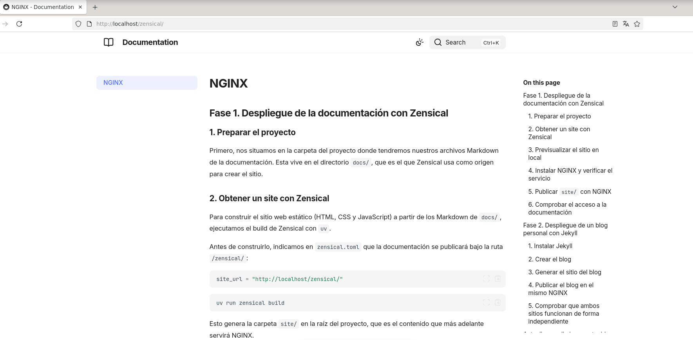
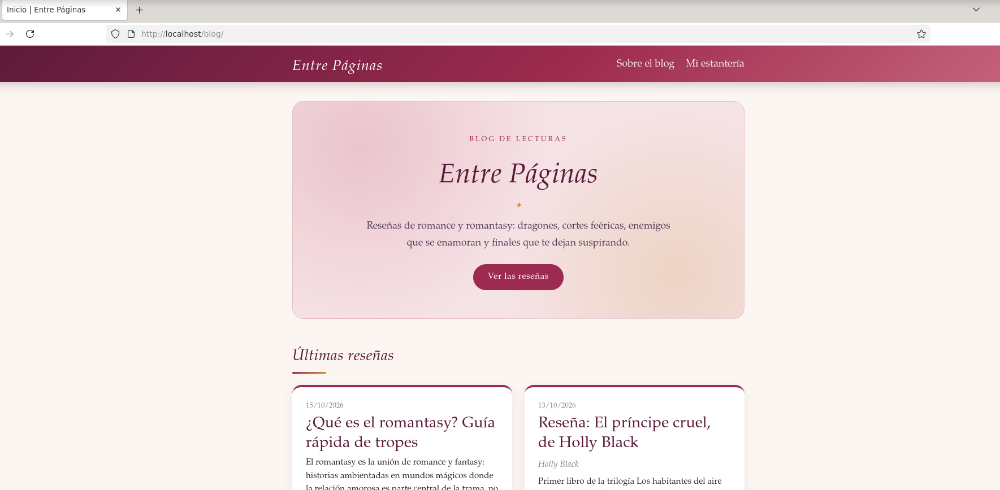

NGINX
Fase 1. Despliegue de la documentación con Zensical¶
1. Preparar el proyecto¶
Primero, nos situamos en la carpeta del proyecto donde tendremos nuestros archivos Markdown de la documentación. Esta vive en el directorio docs/, que es el que Zensical usa como origen para crear el sitio.
2. Obtener un site con Zensical¶
Para construir el sitio web estático (HTML, CSS y JavaScript) a partir de los Markdown de docs/, ejecutamos el build de Zensical con uv.
Antes de construirlo, indicamos en zensical.toml que la documentación se publicará bajo la ruta /zensical/:
site/ en la raíz del proyecto, que es el contenido que más adelante servirá NGINX.
Resultado:
Using CPython 3.14.7
Creating virtual environment at: .venv
Installed 11 packages in 495ms
Build started
No issues found
Build finished in 0.49s
Comprobamos que se creó el site/
Resultado:
3. Previsualizar el sitio en local¶
Debemos comprobar que la documentación se ve correctamente antes de publicarla. Para ello, lanzaremos el servidor de desarrollo de Zensical:
Por defecto la previsualización queda disponible en http://localhost:8000.
Resultado:
Serving /home/alumno/2DAM-REPOS/DPL-2DAM/Practica Zensical y Jekyll/gitanddocs/site on http://localhost:8000
Build started
No issues found
Podemos hacer una verificación desde otra terminal con:
Resultado:
HTTP/1.1 200 OK
Content-Length: 1303
Content-Type: text/html; charset=utf-8
Date: Fri, 16 Oct 2026 10:38:37 GMT
Last-Modified: Fri, 16 Oct 2026 10:37:17 GMT
4. Instalar NGINX y verificar el servicio¶
Ahora instalaremos NGINX en el entorno donde se desplegará la documentación:
Arrancamos el servicio y comprobar que responde:
Resultado:
● nginx.service - A high performance web server and a reverse proxy server
Loaded: loaded (/usr/lib/systemd/system/nginx.service; enabled; preset: enabled)
Active: active (running) since Fri 2026-10-16 11:49:00 WEST; 55s left
Invocation: e75903278a9a4f2db68f5704dab9ff62
Docs: man:nginx(8)
Main PID: 1148 (nginx)
Tasks: 5 (limit: 7325)
Memory: 6.4M (peak: 6.9M)
CPU: 76ms
CGroup: /system.slice/nginx.service
├─1148 "nginx: master process /usr/sbin/nginx -g daemon on; master…
├─1149 "nginx: worker process"
├─1150 "nginx: worker process"
├─1151 "nginx: worker process"
└─1152 "nginx: worker process"
Resultado desde otra terminal con curl -I http://localhost:
HTTP/1.1 200 OK
Server: nginx
Date: Fri, 16 Oct 2026 10:49:43 GMT
Content-Type: text/html
Content-Length: 33157
Last-Modified: Tue, 13 Oct 2026 10:26:47 GMT
Connection: keep-alive
ETag: "6ace0767-8185"
Accept-Ranges: bytes
5. Publicar site/ con NGINX¶
A continuación, copiaremos el sitio generado a una ruta propia de NGINX y crear un server que lo sirva.
Para hacerlo tenemos que copiar el contenido de site/ a la ruta que servirá NGINX y ajustar permisos:
sudo mkdir -p /var/www/zensical
sudo cp -r site/. /var/www/zensical/
sudo chown -R www-data:www-data /var/www/zensical
Y crearemos el fichero de configuración dentro del repositorio, en nginx/practica.conf:
Dentro de practica.conf pegamos:
server {
listen 80;
server_name localhost;
location = /zensical { return 301 /zensical/; }
location /zensical/ {
alias /var/www/zensical/;
index index.html;
}
}
La documentación se publica en la ruta /zensical/. La directiva alias indica la carpeta del disco desde la que se sirven los ficheros de esa ruta, y el location = redirige /zensical a /zensical/ (con la barra final).
Hecho esto, lo instalaremos en NGINX con un enlace simbólico, y desactivaremos el sitio por defecto para que no interfiera:
sudo cp nginx/practica.conf /etc/nginx/sites-available/practica.conf
sudo ln -s /etc/nginx/sites-available/practica.conf /etc/nginx/sites-enabled/practica.conf
sudo rm -f /etc/nginx/sites-enabled/default
Validamos y recargamos:
Resultado:
nginx: the configuration file /etc/nginx/nginx.conf syntax is ok
nginx: configuration file /etc/nginx/nginx.conf test is successful
6. Comprobar el acceso a la documentación¶
Solo nos falta verificar que la documentación se sirve correctamente desde NGINX:
Resultado:HTTP/1.1 200 OK
Server: nginx
Date: Fri, 16 Oct 2026 11:20:55 GMT
Content-Type: text/html
Content-Length: 33157
Last-Modified: Fri, 16 Oct 2026 11:00:41 GMT
Connection: keep-alive
ETag: "6ad203d9-8185"
Accept-Ranges: bytes
Con este último paso, ya podremos ver la documentación generada con Zensical y servida por NGINX al abrir http://localhost/zensical/ en nuestro navegador.
Fase 2. Despliegue de un blog personal con Jekyll¶
1. Instalar Jekyll¶
Debemos de instalar Ruby y Jekyll para poder construir el blog:
Resultado:
2. Crear el blog¶
Con Jekyll se puede generar un blog completo con un solo comando, que incluye la configuración, el tema por defecto, la página de inicio, la página "Acerca de" y una entrada de ejemplo:
A continuación, personalizaremos blog/_config.yml (título, descripción, autor). Además, como el blog se publicará bajo la ruta /blog/, indicamos esa subruta en baseurl para que Jekyll genere bien los enlaces y la ruta del CSS:
title: Mi primer blog
email: alumno@example.com
description: >-
Mi blog personal sobre desarrollo web.
author: Alumno
baseurl: "/blog"
url: "http://localhost"
y añadiremos al menos una entrada propia en blog/_posts/ con el formato AAAA-MM-DD-titulo.md:
3. Generar el sitio del blog¶
Para construir el sitio estático del blog, debemos descargar las dependencias necesarias:
bundle install
bundle config set --local path vendor/bundle # configura Bundler para instalar las gemas dentro del proyecto
bundle install
A continuación, creamos el sitio:
Jekyll deja el resultado en blog/_site/.
4. Publicar el blog en el mismo NGINX¶
Ampliaremos la configuración anterior con un segundo location en el mismo server de NGINX, de modo que cada sitio se sirva de forma independiente según la ruta (/zensical/ para la documentación y /blog/ para el blog).
Primero, copiaremos el sitio generado y ajustaremos permisos:
sudo mkdir -p /var/www/blog
sudo cp -r blog/_site/. /var/www/blog/
sudo chown -R www-data:www-data /var/www/blog
Luego, ampliaremos nginx/practica.conf en el repositorio:
Dejamos el fichero practica.conf así, con el nuevo location del blog:
server {
listen 80;
server_name localhost;
location = /zensical { return 301 /zensical/; }
location = /blog { return 301 /blog/; }
location /zensical/ {
alias /var/www/zensical/;
index index.html;
}
location /blog/ {
alias /var/www/blog/;
index index.html;
}
}
Por último, copiamos la configuración actualizada, validamos y recargamos (el enlace simbólico en sites-enabled ya existe, así que no hace falta crearlo de nuevo):
sudo cp nginx/practica.conf /etc/nginx/sites-available/practica.conf
sudo nginx -t
sudo systemctl reload nginx
Resultado:
nginx: the configuration file /etc/nginx/nginx.conf syntax is ok
nginx: configuration file /etc/nginx/nginx.conf test is successful
5. Comprobar que ambos sitios funcionan de forma independiente¶
Verificaremos que cada URL sirve su propio contenido en el mismo NGINX:
curl -s http://localhost/zensical/ | grep -m1 -i "<title>"
curl -s http://localhost/blog/ | grep -m1 -i "<title>"
Los dos <title> deben ser distintos: el de la documentación y el del blog. Para verlos en el navegador, abriremos http://localhost/zensical/ para la documentación y http://localhost/blog/ para el blog.
Resultado:
<title>Get started - Documentation</title>
<title>Mi primera entrada | Mi blog personal sobre desarrollo web.</title>
Actualizar o eliminar contenido de la documentación en Zensical¶
Cuando se quita una página de la documentación no basta con borrar el fichero Markdown. El contenido vive en tres sitios a la vez, y cada uno hay que actualizarlo:
| Dónde | Qué contiene | Ruta |
|---|---|---|
| Repositorio | Los Markdown originales | docs/ |
| Sitio generado | El HTML que crea Zensical | site/ |
| NGINX | La copia que ve el navegador | /var/www/zensical/ |
Si solo se borra el Markdown, la web no cambia: site/ y /var/www/zensical/ conservan las páginas antiguas. Por eso el proceso se hace en tres pasos.
1. Quitar la página del menú¶
Se comprueba si la página aparece en el menú, que está en la sección nav del fichero de configuración de Zensical (zensical.toml). Si aparece, hay que eliminar también su línea.
nav = [
{ "Get started" = "index.md" },
# { "Tema Visual" = "tema-visual.md" }, <- línea eliminada
]
El menú es una lista de ficheros que Zensical espera encontrar. Si una entrada apunta a un Markdown que ya no existe, el build muestra avisos y puede generar enlaces rotos en la navegación. Lo mismo ocurre con los enlaces internos de otras páginas hacia la página borrada (por ejemplo, un índice con anclas a secciones que ya no existen), que también aparecen como avisos durante el build.
2. Regenerar el sitio desde cero¶
zensical build escribe en site/, pero no borra lo que ya hay. Si se omite rm -rf site, las páginas eliminadas siguen en esa carpeta y acaban publicándose igualmente. Partir de una carpeta vacía garantiza que site/ refleja exactamente el contenido actual de docs/.
3. Vaciar y volver a publicar en NGINX¶
sudo rm -rf /var/www/zensical/*
sudo cp -r site/. /var/www/zensical/
sudo chown -R www-data:www-data /var/www/zensical
rm -rf /var/www/zensical/*vacía la carpeta que sirve NGINX, porquecp -rsolo añade y sobrescribe ficheros, nunca elimina los que ya no existen. Sin este paso, las páginas borradas seguirían accesibles desde el navegador.cp -r site/. /var/www/zensical/copia el sitio nuevo. La barra y el punto (/.) copian también los ficheros ocultos y evitan crear una subcarpetasitedentro del destino.chown -R www-data:www-datadevuelve la propiedad al usuario con el que se ejecuta NGINX. Los ficheros copiados consudopertenecen aroot, y sin este paso NGINX podría responder con un error 403.
Bloque de comandos completos:
rm -rf site
uv run zensical build
sudo rm -rf /var/www/zensical/*
sudo cp -r site/. /var/www/zensical/
sudo chown -R www-data:www-data /var/www/zensical
4. Comprobación¶
Resultado:
HTTP/1.1 200 OK
Server: nginx
Date: Fri, 16 Oct 2026 22:23:43 GMT
Content-Type: text/html
Content-Length: 49210
Last-Modified: Fri, 16 Oct 2026 22:16:30 GMT
Connection: keep-alive
ETag: "6ad2a23e-c03a"
Accept-Ranges: bytes
Para confirmar que una página eliminada ya no existe, se pide su dirección y debe devolver un 404:
Resultado:
HTTP/1.1 404 Not Found
Server: nginx
Date: Fri, 16 Oct 2026 22:24:16 GMT
Content-Type: text/html
Content-Length: 146
Connection: keep-alive
Si el navegador sigue mostrando la versión anterior, se recarga sin caché con Ctrl+Shift+R, porque el tema de Zensical usa navegación instantánea y puede conservar páginas ya visitadas.
Zensical final:¶

Actualizar o eliminar contenido del blog en Jekyll¶
Cuando se quita una entrada del blog no basta con borrar su fichero. El contenido vive en tres sitios a la vez, y cada uno hay que actualizarlo:
| Dónde | Qué contiene | Ruta |
|---|---|---|
| Repositorio | Las entradas y páginas originales en Markdown | blog/_posts/ y blog/*.markdown |
| Sitio generado | El HTML que crea Jekyll | blog/_site/ |
| NGINX | La copia que ve el navegador | /var/www/blog/ |
Si solo se borra el Markdown, la web no cambia: _site/ y /var/www/blog/ conservan las páginas antiguas. Por eso el proceso se hace en tres pasos.
1. Quitar la entrada del repositorio¶
Las entradas son los ficheros de blog/_posts/, con el formato AAAA-MM-DD-titulo.markdown. Para eliminar una:
Jekyll construye la portada y la página recorriendo todas las entradas, así que al borrar el fichero desaparecen solas de ambas listas y no hay que tocar nada más.
Si lo que se elimina es una página (por ejemplo bienvenido.markdown) en lugar de una entrada, también hay que quitarla del menú superior, que se define en la sección header_pages de _config.yml:
Conviene revisar además si otras entradas enlazan a la que se ha borrado, porque esos enlaces quedarían rotos.
Al añadir una entrada nueva se crea el fichero con el mismo formato de nombre y su cabecera (layout, title, date...). La fecha no puede ser posterior a hoy, porque Jekyll no publica las entradas con fecha futura.
2. Regenerar el sitio desde cero¶
Jekyll normalmente limpia de _site/ lo que ya no genera, pero se borra la carpeta y la caché (.jekyll-cache) para partir de cero y asegurarse de que _site/ refleja exactamente el contenido actual de blog/.
3. Vaciar y volver a publicar en NGINX¶
sudo rm -rf /var/www/blog/*
sudo cp -r blog/_site/. /var/www/blog/
sudo chown -R www-data:www-data /var/www/blog
rm -rf /var/www/blog/*vacía la carpeta que sirve NGINX, porquecp -rsolo añade y sobrescribe ficheros, nunca elimina los que ya no existen. Sin este paso, las entradas borradas seguirían accesibles desde el navegador.cp -r blog/_site/. /var/www/blog/copia el sitio nuevo. La barra y el punto (/.) copian también los ficheros ocultos y evitan crear una subcarpeta_sitedentro del destino.chown -R www-data:www-datadevuelve la propiedad al usuario con el que se ejecuta NGINX. Los ficheros copiados consudopertenecen aroot, y sin este paso NGINX podría responder con un error 403.
Bloque de comandos completos:
cd blog
rm -rf _site .jekyll-cache
bundle exec jekyll build
cd ..
sudo rm -rf /var/www/blog/*
sudo cp -r blog/_site/. /var/www/blog/
sudo chown -R www-data:www-data /var/www/blog
4. Comprobación¶
Resultado:
HTTP/1.1 200 OK
Server: nginx
Date: Fri, 16 Oct 2026 23:16:41 GMT
Content-Type: text/html
Content-Length: 7390
Last-Modified: Fri, 16 Oct 2026 23:16:33 GMT
Connection: keep-alive
ETag: "6ad2b051-1cde"
Accept-Ranges: bytes
Para confirmar que una entrada eliminada ya no existe, se pide su dirección y debe devolver un 404:
Resultado:
HTTP/1.1 404 Not Found
Server: nginx
Date: Fri, 16 Oct 2026 23:17:02 GMT
Content-Type: text/html
Content-Length: 146
Connection: keep-alive
También se puede comprobar que su título ya no aparece en la portada (debe devolver 0):
Si el navegador sigue mostrando la versión anterior, se recarga sin caché con Ctrl+Shift+R.
Blog final:¶

Enlace al repo: https://github.com/Atthemyg/DPL-2DAM/tree/main/practica-zensical-jekyll